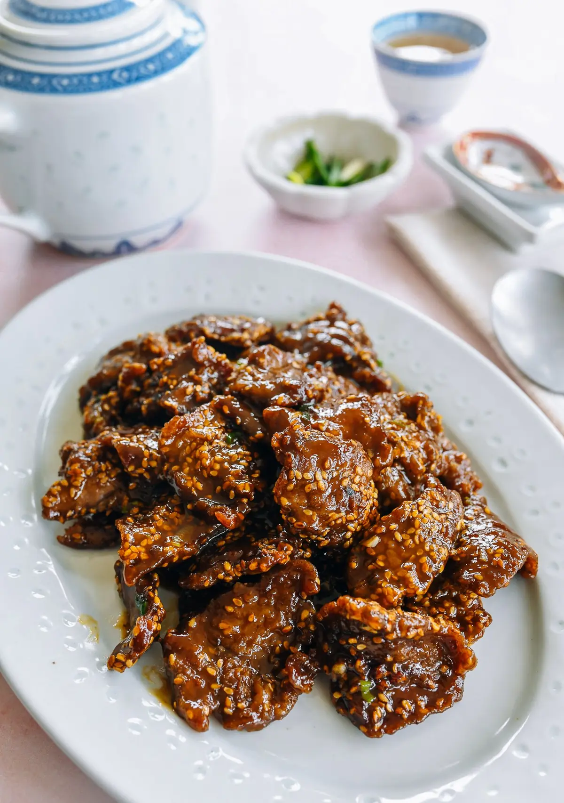

Sesame Beef
- Total time1 hr and 45 mins
- Serves4
- Ingredients20
- Steps6

Ingredients
For marinating the beef
- 12 ounces beef flank steak (sliced against the grain into ¼-inch/6mm slices)
- 1 tablespoon water
- 2 teaspoons cornstarch
- 2 teaspoons Shaoxing wine
- 1 teaspoon sesame oil
- 1 teaspoon oyster sauce
- 1/4 teaspoon baking soda
For the sauce
- 2/3 cup hot water
- 3 tablespoons brown sugar (light or dark)
- 2 1/2 tablespoons light soy sauce
- 1 tablespoon oyster sauce
- 1 1/2 teaspoons sesame oil
- 1/2 teaspoon rice vinegar
- 1 pinch white pepper
For the rest of the dish
- 1/4 cup cornstarch
- 2 1/2 tablespoons toasted sesame seeds
- 1/2 cup neutral oil (such as canola or vegetable oil)
- 2 cloves garlic (chopped)
- 1 tablespoon scallions (chopped)
- 2 teaspoons cornstarch (mixed into a slurry with 1 tablespoon water)
Directions
Marinating the beef
- Combine the sliced beef with the water, cornstarch, Shaoxing wine, sesame oil, oyster sauce, and baking soda. Stir well, and set aside to marinate for 1 hour. You can also do this the night before. (For convenience—it doesn't make a significant difference in flavor.)
Prepare the sauce
- In a shallow dish, stir together the cornstarch and sesame seeds. Dredge the beef slices in this mixture until thoroughly coated. Give each slice a gentle shake to release excess cornstarch (grab a few at a time to expedite the process).
- Heat the neutral oil in the wok or pan over medium-high heat. When a piece of beef sizzles in the oil (just before the oil begins to smoke), it’s ready for frying. Place the beef slices in the wok/pan in an even layer. Shallow-fry for 1 minute on each side to achieve a crusty coating, and transfer to a plate or sheet pan in one layer. Don’t pile the pieces on top of each other; you want the beef to stay crispy.
Finish the dish
- Let the particles in the oil settle, then drain the oil into a heat-proof bowl, leaving behind any sediment. Wipe the wok/pan clean with a paper towel. Add a tablespoon of oil back to the wok over medium heat, and add the chopped garlic. Cook for 15 seconds.
- Then add the sauce mixture. Stir the sauce to deglaze the pan and bring it up to a simmer. Then add the scallions.
- Add the cornstarch slurry mixture, and stir until the sauce thickens just enough to coat a spoon. You can also add a teaspoon or two of hot water to thin out the sauce if it looks too thick for your liking. Add the beef, and toss until the pieces are coated in sauce. Transfer to a plate and serve with lots of rice!
Recipe credit: thewoksoflife.com